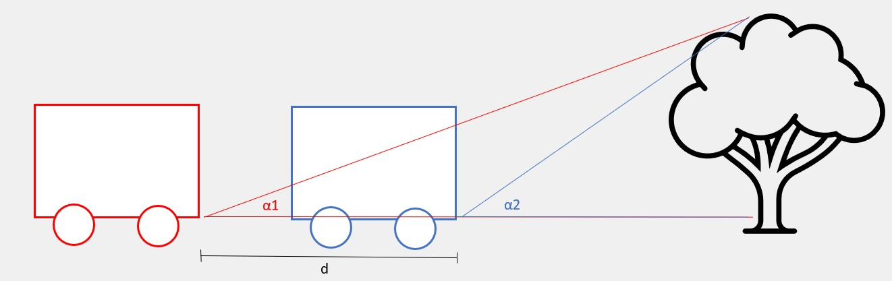

Monsanto’s digital agriculture subsidiary, The Climate Corporation, desired to create a robot capable of automatedly traverse crops and catalogue plant health and inventory. Corn crops suffer greatly with weeds in the early growth stages, and with common crop diseases in later stages. However, it is hard to keep track of these issues due to the extraordinary size of the fields most farms must work with. Climate’s proposal was the creation of a robot capable of mapping these issues, so that farmers could identify early onsets of crop diseases and reduce chemicals used in the field. I was responsible for designing the software to guide this robot and make it able to discern weeds and diseases.
The first step in creating an automated robot is to decide how to implement the navigation. This robot received an integrated GPS and odometry system, but the positioning accuracy was still not in the desired centimeter order of magnitude. To increase accuracy, I fused this data with the parallax data from a camera, as described in the image below. This allowed for precise positioning without increasing the costs.
When it comes to detecting weeds and diseases, computer vision is essential. I firstly approached this issue by using a deep neural network, but the training time was not optimal. Trying a simpler approach, I decided to normalize the images with a directed histogram and label the images with a support vector machine. By training an SVM with imaged of weeds and corn sprouts, I was able to achieve a 90% weed identification. The same approach can be extended to detecting diseases that manifest in the corn leaves.

The program developed was successfully tested in simulations and forwarded to be implemented with the physical robot.